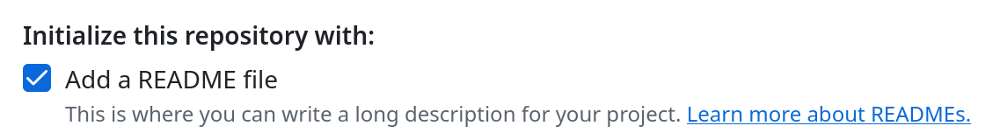
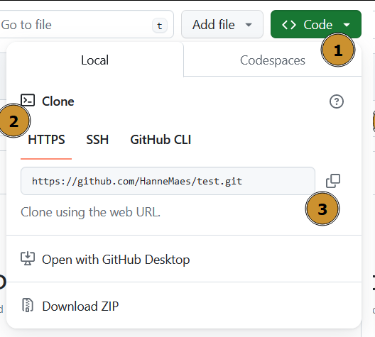
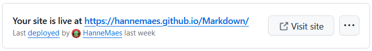

Tijdens deze opdracht gaan we een website publiceren en onderhouden. Kies een thema dat je persoonlijk interesseert. Dit kan variëren van hobby’s, nieuws, tot persoonlijke projecten. Het belangrijkste is dat je gemotiveerd blijft om de inhoud regelmatig bij te werken.
Git downloaden
Controleer of Git bash op je computer staat, zo niet download en installeer je het via: https://gitforwindows.org/
Nieuw GitHub project
-
Maak een nieuwe repository op GitHub.
Het is belangrijk dat je een README.md file toegevoegd.
- Add a README file
- Een README-bestand is een markdown bestand dat vaak wordt toegevoegd aan een repository om belangrijke informatie te verstrekken. Het kan details bevatten zoals installatie instructies, gebruik, bijdragersrichtlijnen en andere relevante informatie.
Het dient als de startpagina voor het project.
- Een README-bestand is een markdown bestand dat vaak wordt toegevoegd aan een repository om belangrijke informatie te verstrekken. Het kan details bevatten zoals installatie instructies, gebruik, bijdragersrichtlijnen en andere relevante informatie.
- Public vs Private
- Iedereen kan een public repository bekijken en klonen. Ze kunnen ook suggesties voor wijzigingen (pull requests) doen.
- Alleen mensen die zijn uitgenodigd door de eigenaar van de repository hebben toegang tot een private repository. De inhoud is niet zichtbaar voor anderen.
Op je website online te zetten via GitHub Pages moet je repository public zijn.
- Optioneel: Add .gitignore
- Het .gitignore-bestand wordt gebruikt om bepaalde bestanden of mappen uit te sluiten van versiebeheer.
- Optioneel: Choose a license
- Het kiezen van een licentie is belangrijk om de voorwaarden te bepalen waaronder anderen je code mogen gebruiken, wijzigen en verspreiden.
- Een licentie is niet verplicht, maar het is aan te raden om er een toe te voegen, in lijn met de principes van open source.
- Als je geen licentie kiest, wordt je code automatisch beschermd door het auteursrecht.
Andere kunnen je code bekijken, maar mogen deze niet gebruiken, toch geeft GitHub hen nog steeds de optie je code to clonen.
→ Hier vind je meer informatie over licenties: Licenties
- Add a README file
-
Clone je GitHub naar je computer
-
Kopieer de url van de repository:
Code > Local > HTTPS
- Open een terminal op de locatie waar je project moet komen.
- Windows PowerShell:
Rechter klik > Openen in Terminal - VS Code:
ctrl + shift + p > Create New Terminal
- Windows PowerShell:
- Clone de repository:
git clone <repo url>
Als alles goed gelopen is, heb je nu een folder met de GitHub repository waarin je kan beginnen werken.
-
Maak een website
Maak een website in de nieuwe folder die je net gecloned hebt.
Push: Code uploaden
- Voeg de bestanden toe die je wil pushen (uploaden) naar GitHub.
- 1 bestand toevoegen:
git add index.html. - Meerdere bestanden toevoegen:
git add index.html styles.css. - Alle bestanden in de locatie toevoegen:
git add *.
- 1 bestand toevoegen:
- Controleer of alle bestanden zijn toegevoegd:
git status.- Wil je de
git addongedaan maken, gebruik dat dit command:git reset.
- Wil je de
- Als alle bestanden toegevoegd zijn maar je een nieuwe commit:
git commit -m 'message'.- Verander
'message'door wat je hebt aangepast aan je website, zo heb je een duidelijk overzicht van alle aanpassingen.
- Verander
- Push (upload) alle bestanden naar GitHub:
git push.
Wil je bij een conflict je lokale versie pushen: git push --force origin main.
Website publiceren via GitHub pages
- Ga naar de settings van je GitHub repo (niet de settings van je account).
Settings (balk bovenaan) > Pages (balk rechts) - Branch: selecteer de folder die je wil publiceren als website.
- Master: publiceer je hele project al website.
- Custom folder: je kan ervoor kiezen enkel een deel van je project te publiceren als website (vaak de
docs/folder). Zo kan je naast je website ook andere bestanden hebben zoals test- of onafgewerkte pagina’s, design assets, …
Als alles goed gelopen is, krijg je bovenaan de Pages pagina in de Settings het adres voor je website te zien:
